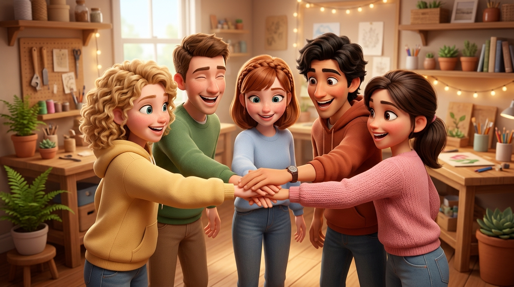
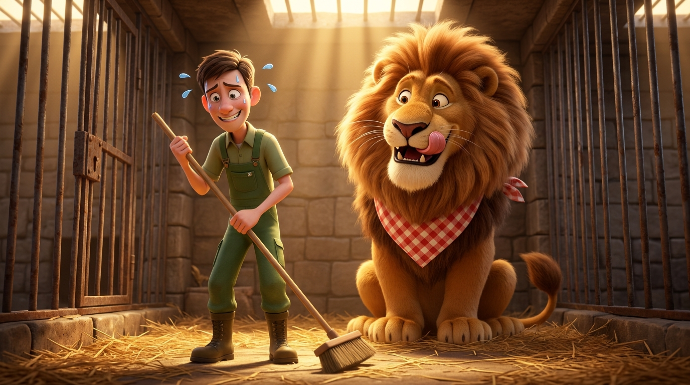

Paweł Gębarowski
Po kolei, krótko.
To z karteczki na ubraniu.
Z jakim pytaniem przychodzę?
Co jest dla mnie najtrudniejsze w wyborze?
Z czym chcę stąd wyjść?
Swoje karteczki przyklej na tablicy.
Możesz dopisywać nowe przez cały warsztat.
Na końcu spotkania omówimy je wspólnie.
Spisujemy go razem na flipcharcie.

Po kolei. Zawsze możesz powiedzieć „pas”.
Jedno zdanie wystarczy.

zasady i rozgrzewka
trudności i dane
RIASEC i wartości
jeden zawód pod lupą
72 h, 7 dni, 30 dni
pytania i ankieta
„Skoro nie wiem, to coś ze mną jest nie tak”.
Czy wiesz, jaką pracę chcesz mieć, gdy będziesz mieć 30 lat?
OECD 2025, dane PISA 2022
To częste. Warto to sprawdzać, a nie czekać, aż samo się wyjaśni.
Na ile dziedzina wykształcenia zgadza się z pracą osób w wieku 15–34 lata:
Ważna decyzja, ale odwracalna. Zmiana kosztuje czas i pieniądze.
GUS, Osoby młode na rynku pracy w 2024 r., s. 7. Ocena samych badanych.
Legrand i in., 2023
Ulas-Kilic i in., 2020
Hirschi, 2010
Przygotowanie nie wyklucza przypadku.
Większość prac się zmieni, a nie zniknie. Częściowa automatyzacja może jednak obniżyć popyt na niektóre zawody.
Patrz na to, co w tej pracy robisz na co dzień, a nie na jej nazwę.
ILO, Generative AI and jobs: A 2025 update, s. 1, 9–10. Narażenie to teoretyczny potencjał.
„Mam taki wynik. Gdzie mnie przyjmą?”
Zainteresowania to dobry trop, a progi to prawdziwe ograniczenie.
Przedmiot w szkole to nie praca. Progi stają się jedynym kryterium.
Przeczytaj sylabus i opis zawodu, zanim spojrzysz na progi.
„Lubię to na studiach, więc polubię tę pracę”.
Studia dają podstawy, a w niektórych zawodach także prawo do ich wykonywania.
Studia nie pokazują dnia pracy. Sam program to najczęstszy powód przerwania nauki: 27,5%.
Sylabus, opis zawodu i rozmowa z kimś z branży.
GUS, Osoby młode na rynku pracy w 2024 r., s. 5. Wszystkie poziomy edukacji.
Rodzice, tradycje rodzinne, presja grupy, znajomi w tym samym mieście.
Bliscy Cię znają i mają informacje. Miasto ze znajomymi to też prawdziwy powód.
Wybór należy do kogoś innego, a skutki ponosisz Ty.
Oddziel to, czego chcesz Ty, od tego, czego chcą dla Ciebie inni.
„Po tym kierunku jest praca”.
Poczucie bezpieczeństwa jest ważne. To wartość, nie błąd.
Może przysłonić to, czego chcesz, i skończyć się wypaleniem.
ELA: zarobki i bezrobocie po kierunku. W 1. roku po dyplomie to niespełna 70% lokalnej średniej płacy.
Gdyby praca była gwarantowana po każdym kierunku, co byś wybrał(a)?
System ELA, rocznik 2014, ela.nauka.gov.pl
„Wszyscy idą na studia”. Planuje je 63% uczniów ostatnich klas.
Dla wielu osób studia są dobrą drogą.
Nie sprawdzasz, dlaczego tam idziesz ani co jeszcze jest możliwe.
Szkoła policealna, kurs zawodowy, praca połączona ze studiami.
CBOS, Młodzież 2025, s. 18
Filmy, seriale, „IT to 15 tysięcy na start”.
Wyobrażenia dają pierwszy impuls: architekt rysuje domy.
Dzień pracy to także przepisy, uzgodnienia, poprawki i klienci.
Znajdź opis zawodu i zapytaj kogoś, kto go wykonuje.
Jak bym się czuł(a) po ośmiu godzinach takiego dnia?
lata × (10 miesięcy × koszty + czesne − 10 miesięcy × wpływy)
Publiczne studia stacjonarne są bezpłatne. Sprawdź stypendia i akademiki.
Przykład na podstawie Portfela Studenta 2025 (ZBP, WIB), średnie dla Polski
Sylabusy i programy na stronach uczelni.
Zapisz odpowiedź na jedno z nich. Wrócimy do niego po diagnozie.
Na wybór wpływa dużo więcej: pieniądze, miejsce, zdrowie, przypadek. Dziś sprawdzamy dwa wymiary.
Narzędzia, liczby, sztuka, ludzie, zarządzanie czy procedury?
Złe dopasowanie: ciągłe zmęczenie.
Niezależność, uznanie, dobry szef, spokój po pracy?
Złe dopasowanie: szybkie wypalenie.
60 czynności. Oceniasz pierwszy odruch: 0 za karę, 2 obojętne, 4 czysta frajda.
Wpisz ocenę, na „Krok!” stań na osi.
Druga połowa arkusza.
Potem odsłonimy, co znaczą.
sprzęt, technika, rzemiosło
analiza, nauka, logika
tworzenie, forma, swoboda
pomaganie, uczenie
wpływ, sprzedaż, ryzyko
porządek, liczby, procedury
20 zdań. Szukasz tego, bez czego nie wytrzymasz w pracy.
Po 4 w kolumnie, w ciszy. Możesz skreślać.
Policz wynik według klucza.
Zabierasz je do laboratorium.
| Wartość | Numery zdań | Mnożnik |
|---|---|---|
| Osiągnięcia | 1, 6 | × 3 |
| Niezależność | 9, 13, 20 | × 2 |
| Uznanie | 4, 5, 12 | × 2 |
| Relacje | 8, 11, 15 | × 2 |
| Wsparcie | 2, 16, 17 | × 2 |
| Warunki pracy | 3, 7, 10, 14, 18, 19 | × 1 |
+ niezależność: zdalny analityk danych
+ stabilność: analityk w urzędzie statystycznym
+ uznanie: właściciel agencji marketingowej
+ relacje: koordynator projektów w fundacji
Woda, coś ciepłego, świeże powietrze. Potem laboratorium.
Wybierasz roboczo, żeby przećwiczyć metodę. To nie decyzja na całe życie.
Własny pomysł albo z katalogu hipotez.
Dopisz kod RIASEC i dwie najważniejsze wartości.
Dalej: Bilans
Na start i po 5 latach.
Stałe godziny, zmiany, zdalnie?
Fizyczne i psychiczne.
Co Ci zostaje o 17:00?
Dalej: Ciemna strona
Co jest żmudne, nudne albo irytujące?
Jedna konkretna rzecz.
Co kłóci się z Twoim kodem i wartościami?
Dalej: Otoczenie i plan B
Twój, pół na pół czy cudza presja?
Czego wymaga wejście do tego zawodu?
Rezygnujesz po roku. Z czym zostajesz?
Dalej: Wymiana w parach
Po 4 minuty na osobę.
Partner słucha i nie przerywa.
Takie, które sprawdza, czy to się trzyma.
Przyda się przy matrycy.
Dalej: Matryca, razem przy flipcharcie
Stabilnie, spokojnie, umiarkowanie.
Dobre zarobki i samodzielność.
Mało pieniędzy, dużo stresu.
Duże pieniądze, brak życia po pracy.
„Ten zawód ląduje tutaj, bo…”
Decyduje sala: woda albo od razu ostatni blok.
„Jaki darmowy krok zrobisz w 3 dni, żeby sprawdzić dzisiejsze wnioski?”
Napisać do kogoś z branży, przeczytać sylabus, przejrzeć 3 ogłoszenia.
„Co w tym tygodniu da Ci największą ulgę w temacie przyszłości?”
„Co za miesiąc chcesz mieć sprawdzone, a co skreślone?”
Czy ten temat jest już jasny?
Co potrzebuje jeszcze minuty?
Nie musisz dziś wiedzieć. Wiesz już, jak to sprawdzić.
Szczera opinia pomoże poprawić warsztat dla kolejnych grup.
Leży na stoliku. Około 3 minut.
Zeskanuj kod. Ankieta jest anonimowa.